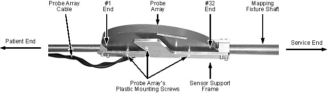
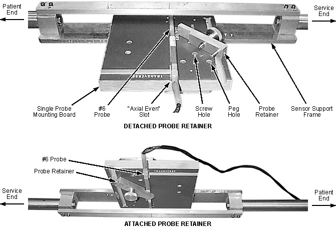
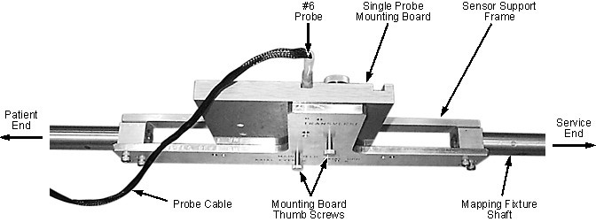

Illustration 9: Attaching Probe Array to Mapping Fixture Shaft

For field mapping while running ShimTool, attach the probe array using the array's plastic screws. See Illustration 9.
For checking field stability, check in conformance with the 'Field Stability Check' subsection of Shimming while the mapping fixture is installed:
Slide a #6 probe into the single probe mounting board's slot labelled “Axial Even" to the end of the slot. See Illustration 10. Make sure the probe is snug, but not tight, in the slot.
Attach the probe retainer as shown in Illustration 10.
| NOTE: | Do not overtighten the probe retainer. |
Attach the single probe mounting board to the mapping fixture shaft's sensor support frame using the board's thumb screws. See Illustration 11.
Illustration 10: Mounting #6 Probe to Single Probe Mounting Board

Illustration 11: Attaching Single Probe Mounting Board to Mapping Fixture
